VCF Deploy | Scripted Install | Home Lab

How to script a VCF SDDC Manager install on a single Nested ESXi Host!
You have to work hard to get your thinking clean to make it simple. But it's worth it in the end because once you get there, you can move mountains. - Steve Jobs
Product Versions used for this Blog:
- VMware Cloud Foundation: 5.2.1
- PowerCLI: 13.3
- PowerShell: 7.4.6
Use Case for Creating this Blog
##### Goals:
- Leverage my existing Home Lab Hardware to start using and learning about VMware Cloud Foundation (VCF).
- Enable quick creation or re-creation of a VCF environment.
- Run VCF on a single Minisforum MS-01 using nested ESXi.
- For this use case, a vCenter is already set up and running with multiple physical ESXi hosts.
- Utilize Tiered Memory with the MS-01 to support more VMs and explore how Tiered Memory works.
- Run the Cloud Builder steps manually to gain hands-on experience, using a JSON file generated by the script for deployment.
- Install VCF 5.2.1 with the script, then manually upgrade to VCF 5.2.1.1 to learn how SDDC Manager performs upgrades.
- Manually create Workload Domains to better understand the deployment process and deepen learning.
- Add the line
bringup.mgmt.cluster.minimum.size=1to the file/etc/vmware/vcf/bringup/application.propertiesto enable VCF SDDC Manager to run on a single nested ESXi host. - Ensure performance is sufficient for learning purposes, without requiring production-level speed.
##### Initial Considerations:
I explored VMware Holodeck as an option, but the resource requirements were too high for my setup.
##### Inspiration and Approach:
I came across William Lam's Blog about running VCF on a single NUC and decided to adapt that idea for my lab. William also provides a PowerShell script that automates the entire VCF installation in a single run. William's script does require more than one ESXi Host.
##### Outcome:
After evaluating the available options, I decided to modify some of the example PowerShell scripts and processes to deploy and manage VCF in my Home Lab.
This blog serves as a guide to automate VMware Cloud Foundation (VCF) deployment in a home lab environment. It is also designed as a learning resource for VCF, which is why some steps are performed manually.
By combining automation with hands-on tasks, the goal is to help you understand VCF deployment processes while enabling you to streamline repetitive tasks for future setups.
Whether you're exploring VCF for the first time or looking to optimize your home lab, this approach provides flexibility to learn, experiment, and refine your deployment strategies.
This blog post shares the scripts and the steps I followed to make it all work.
##### Home Lab Hardware
Primary Systems:
- (2) Minisforum MS-01
- 96 GB memory
- Intel Core i9-13900H (14 cores: 6 Performance + 8 Efficient)
- I use all cores and specify which cores to use per VM with
Scheduling Affinityrules. - VMs like VCF Automation and Operations, I use the performance cores.
- VMs with light use, I specify the Efficient Cores.
- Storage Configuration:
- 1 TB NVMe for Tiered Memory @ 400% (SAMSUNG 990 PRO SSD NVMe)
- To specify the amount of tiered memory you want to use, you need to set a percentage. This percentage determines how much tiered memory is allocated relative to the physical memory. For example, in my lab, I have 96 GB of physical memory.
- Using a 400% tiered memory configuration:
 - (96 GB * 400%) + 96 GB physical = 480 GB Total Memory.
- 4 TB NVMe for Storage (SAMSUNG 990 PRO SSD NVMe)
- 1 NVMe slot open for future expansion
- (1) MS-01 runs everything in my lab but the VCF environment
- (1) MS-01 is dedicated for this VCF environment. All VMs that it takes for a VCF environment
- (2) Apple Mac Minis (Intel-based)
- Running Fusion and Nested ESXi
- 64 GB memory each
- Processors:
- 1 with Intel i3
- 1 with Intel i5
- I’m extremely satisfied with the Minisforum MS-01. If I expand my lab, I plan to add more MS-01 units.
- The MS-01 includes (2) SFP ports, and I’m considering adding 10 GbE networking to support future lab improvements.
- The MS-01 CPU fan will run continuously due to the high number of VMs running.
Additional Systems:
Thoughts on the Minisforum MS-01:
##### PowerShell Scripts:
Script Overview - Step 1
Purpose:
This script automates the creation of the Nested ESXi Host required by VCF Cloud Builder to deploy and configure the VCF environment.
Steps Performed:
- Create the Nested ESXi Host – Prepares the environment for VCF Cloud Builder to handle the installation and deployment process.
- This script is designed to install nested ESXi hosts and can be reused for various use cases.
- By keeping this step as a separate script, it allows flexibility for future deployments beyond this specific lab setup.
- Update this script with names and IP addresses that match your lab environment.
# Script to add Nested ESXi Host
# Author: Dale Hassinger
# Based on Script by: William Lam and other vCommunity Web Sites
# vCenter Server used to deploy VMware Cloud Foundation Lab
$VIServer = "192.168.6.100"
$VIUsername = "administrator@vcrocs.local"
$VIPassword = "VMware1!"
# Full Path to the Nested ESXi
$NestedESXiApplianceOVA = "/Users/dalehassinger/Downloads/Nested_ESXi8.0u3c_Appliance_Template_v1.ova"
# Nested ESXi VMs for Management Domain
$NestedESXiHostnameToIPsForManagementDomain = @{
"VCF-DDC-ESX179" = "192.168.4.179"
} # End Nested Names
# Nested ESXi VM Resources for Management Domain
$NestedESXiMGMTvCPU = "12"
$NestedESXiMGMTvMEM = "88" #GB
$NestedESXiMGMTCachingvDisk = "4" #GB
$NestedESXiMGMTCapacityvDisk = "500" #GB
$NestedESXiMGMTBootDisk = "32" #GB
# General Deployment Configuration for Nested ESXi
# These Values are for existing existing vCenter Install
#$VMDatacenter = "Datacenter-DB-01"
$VMCluster = "VCF_LAB"
$VMNetwork = "VMs"
$VMDatastore = "ESX-04-2TB"
$VMNetmask = "255.255.252.0"
$VMGateway = "192.168.4.1"
$VMDNS = "192.168.6.1"
$VMNTP = "time.google.com"
$VMPassword = "VMware1!"
$VMDomain = "vcrocs.local"
$VMSyslog = "192.168.6.94"
#$VMFolder = "VCF-VMs"
#### DO NOT EDIT BEYOND HERE ####
# 1 = yes
# 0 - no
$confirmDeployment = 1
$deployNestedESXiVMsForMgmt = 1
$StartTimeLogFile = Get-Date -Format "yyyyMMddHHmm"
#$StartTimeLogFile
$verboseLogFile = "vcf-lab-deployment-$StartTimeLogFile.log"
#$verboseLogFile
$StartTime = Get-Date
Function New-LogEvent {
param(
[Parameter(Mandatory=$true)][String]$message,
[Parameter(Mandatory=$false)][String]$color="green"
)
$timeStamp = Get-Date -Format "MM-dd-yyyy_hh:mm:ss"
Write-Host -NoNewline -ForegroundColor White "[$timestamp]"
Write-Host -ForegroundColor $color " $message"
$logMessage = "[$timeStamp] $message"
$logMessage | Out-File -Append -LiteralPath $verboseLogFile
} # End Function
if($confirmDeployment -eq 1) {
Write-Host -ForegroundColor Magenta "`nNested ESXi Build Details:`n"
Write-Host -ForegroundColor Yellow "`n---- vCenter Server used to Build Nested ESXi Hosts ----"
Write-Host -NoNewline -ForegroundColor Green "vCenter Server Address: "
Write-Host -ForegroundColor White $VIServer
Write-Host -NoNewline "`n"
Write-Host -NoNewline -ForegroundColor Green "VM Network: "
Write-Host -ForegroundColor White $VMNetwork
Write-Host -NoNewline -ForegroundColor Green "VM Storage: "
Write-Host -ForegroundColor White $VMDatastore
Write-Host -NoNewline -ForegroundColor Green "VM Cluster: "
Write-Host -ForegroundColor White $VMCluster
if($deployNestedESXiVMsForMgmt -eq 1) {
Write-Host -ForegroundColor Yellow "`n"
Write-Host -ForegroundColor Yellow "`---- vESXi Configuration for VCF Management Domain ----"
Write-Host -NoNewline -ForegroundColor Green "# of Nested ESXi VMs: "
Write-Host -ForegroundColor White $NestedESXiHostnameToIPsForManagementDomain.count
Write-Host -NoNewline -ForegroundColor Green "-------IP Address(s): "
Write-Host -ForegroundColor White $NestedESXiHostnameToIPsForManagementDomain.Values
Write-Host -NoNewline -ForegroundColor Green "----------------vCPU: "
Write-Host -ForegroundColor White $NestedESXiMGMTvCPU
Write-Host -NoNewline -ForegroundColor Green "----------------vMEM: "
Write-Host -ForegroundColor White "$NestedESXiMGMTvMEM GB"
Write-Host -NoNewline -ForegroundColor Green "--------Caching VMDK: "
Write-Host -ForegroundColor White "$NestedESXiMGMTCachingvDisk GB"
Write-Host -NoNewline -ForegroundColor Green "-------Capacity VMDK: "
Write-Host -ForegroundColor White "$NestedESXiMGMTCapacityvDisk GB"
} # End If
Write-Host -NoNewline "`n"
Write-Host -NoNewline -ForegroundColor Green "Netmask: "
Write-Host -ForegroundColor White $VMNetmask
Write-Host -NoNewline -ForegroundColor Green "Gateway: "
Write-Host -ForegroundColor White $VMGateway
Write-Host -NoNewline -ForegroundColor Green "----DNS: "
Write-Host -ForegroundColor White $VMDNS
Write-Host -NoNewline -ForegroundColor Green "----NTP: "
Write-Host -ForegroundColor White $VMNTP
Write-Host -NoNewline -ForegroundColor Green "-Syslog: "
Write-Host -ForegroundColor White $VMSyslog
Write-Host -NoNewline "`n"
} # End If
# Connect to vCenter
if($deployNestedESXiVMsForMgmt -eq 1 -or $deployNestedESXiVMsForWLD -eq 1 -or $deployCloudBuilder -eq 1 -or $moveVMsIntovApp -eq 1) {
New-LogEvent "Connecting to Management vCenter Server: $VIServer ..."
$viConnection = Connect-VIServer $VIServer -User $VIUsername -Password $VIPassword -WarningAction SilentlyContinue -Protocol https -Force
$datastore = Get-Datastore -Server $viConnection -Name $VMDatastore | Select-Object -First 1
$cluster = Get-Cluster -Server $viConnection -Name $VMCluster
$vmhost = $cluster | Get-VMHost | Get-Random -Count 1
}
# --- Start Nested ESXi MGT Hosts Build
if($deployNestedESXiVMsForMgmt -eq 1) {
$NestedESXiHostnameToIPsForManagementDomain.GetEnumerator() | Sort-Object -Property Value | Foreach-Object {
$VMName = $_.Key
#Write-Host "VMname:"$VMName
$VMIPAddress = $_.Value
#Write-Host "IP:"$VMIPAddress
$ovfconfig = Get-OvfConfiguration $NestedESXiApplianceOVA
#$ovfconfig.Common.guestinfo
$networkMapLabel = ($ovfconfig.ToHashTable().keys | where {$_ -Match "NetworkMapping"}).replace("NetworkMapping.","").replace("-","_").replace(" ","_")
$ovfconfig.NetworkMapping.$networkMapLabel.value = $VMNetwork
$ovfconfig.common.guestinfo.hostname.value = "${VMName}.${VMDomain}"
$ovfconfig.common.guestinfo.ipaddress.value = $VMIPAddress
$ovfconfig.common.guestinfo.netmask.value = $VMNetmask
$ovfconfig.common.guestinfo.gateway.value = $VMGateway
$ovfconfig.common.guestinfo.dns.value = $VMDNS
$ovfconfig.common.guestinfo.domain.value = $VMDomain
$ovfconfig.common.guestinfo.ntp.value = $VMNTP
$ovfconfig.common.guestinfo.syslog.value = $VMSyslog
$ovfconfig.common.guestinfo.password.value = $VMPassword
$ovfconfig.common.guestinfo.ssh.value = $true
New-LogEvent "Deploying Nested ESXi VM $VMName ..."
$vm = Import-VApp -Source $NestedESXiApplianceOVA -OvfConfiguration $ovfconfig -Name $VMName -Location $VMCluster -VMHost $vmhost -Datastore $datastore -DiskStorageFormat thin -Force
New-LogEvent "Adding vmnic2/vmnic3 to Nested ESXi VMs ..."
$vmPortGroup = Get-VirtualNetwork -Name $VMNetwork -Location ($cluster | Get-Datacenter)
if($vmPortGroup.NetworkType -eq "Distributed") {
$vmPortGroup = Get-VDPortgroup -Name $VMNetwork
$vmPortGroup = $vmPortGroup[0]
New-NetworkAdapter -VM $vm -Type Vmxnet3 -Portgroup $vmPortGroup.Name -StartConnected -confirm:$false | Out-File -Append -LiteralPath $verboseLogFile
New-NetworkAdapter -VM $vm -Type Vmxnet3 -Portgroup $vmPortGroup.Name -StartConnected -confirm:$false | Out-File -Append -LiteralPath $verboseLogFile
} else {
New-NetworkAdapter -VM $vm -Type Vmxnet3 -NetworkName $vmPortGroup.Name -StartConnected -confirm:$false | Out-File -Append -LiteralPath $verboseLogFile
New-NetworkAdapter -VM $vm -Type Vmxnet3 -NetworkName $vmPortGroup.Name -StartConnected -confirm:$false | Out-File -Append -LiteralPath $verboseLogFile
} # End If
$vm | New-AdvancedSetting -name "ethernet2.filter4.name" -value "dvfilter-maclearn" -confirm:$false -ErrorAction SilentlyContinue | Out-File -Append -LiteralPath $verboseLogFile
$vm | New-AdvancedSetting -Name "ethernet2.filter4.onFailure" -value "failOpen" -confirm:$false -ErrorAction SilentlyContinue | Out-File -Append -LiteralPath $verboseLogFile
$vm | New-AdvancedSetting -name "ethernet3.filter4.name" -value "dvfilter-maclearn" -confirm:$false -ErrorAction SilentlyContinue | Out-File -Append -LiteralPath $verboseLogFile
$vm | New-AdvancedSetting -Name "ethernet3.filter4.onFailure" -value "failOpen" -confirm:$false -ErrorAction SilentlyContinue | Out-File -Append -LiteralPath $verboseLogFile
New-LogEvent "Updating vCPU Count to $NestedESXiMGMTvCPU & vMEM to $NestedESXiMGMTvMEM GB ..."
Set-VM -Server $viConnection -VM $vm -NumCpu $NestedESXiMGMTvCPU -CoresPerSocket $NestedESXiMGMTvCPU -MemoryGB $NestedESXiMGMTvMEM -Confirm:$false | Out-File -Append -LiteralPath $verboseLogFile
New-LogEvent "Updating vSAN Cache VMDK size to $NestedESXiMGMTCachingvDisk GB & Capacity VMDK size to $NestedESXiMGMTCapacityvDisk GB ..."
Get-HardDisk -Server $viConnection -VM $vm -Name "Hard disk 2" | Set-HardDisk -CapacityGB $NestedESXiMGMTCachingvDisk -Confirm:$false | Out-File -Append -LiteralPath $verboseLogFile
Get-HardDisk -Server $viConnection -VM $vm -Name "Hard disk 3" | Set-HardDisk -CapacityGB $NestedESXiMGMTCapacityvDisk -Confirm:$false | Out-File -Append -LiteralPath $verboseLogFile
New-LogEvent "Updating vSAN Boot Disk size to $NestedESXiMGMTBootDisk GB ..."
Get-HardDisk -Server $viConnection -VM $vm -Name "Hard disk 1" | Set-HardDisk -CapacityGB $NestedESXiMGMTBootDisk -Confirm:$false | Out-File -Append -LiteralPath $verboseLogFile
New-LogEvent "Powering On $vmname ..."
$vm | Start-Vm -RunAsync | Out-Null
} # End Foreach
} # End If
if($deployNestedESXiVMsForMgmt -eq 1 -or $deployNestedESXiVMsForWLD -eq 1 -or $deployCloudBuilder -eq 1) {
New-LogEvent "Disconnecting from $VIServer ..."
Disconnect-VIServer -Server $viConnection -Confirm:$false
}
$EndTime = Get-Date
$duration = [math]::Round((New-TimeSpan -Start $StartTime -End $EndTime).TotalMinutes,2)
New-LogEvent "VCF Lab Nested ESXi Host Build Complete!"
New-LogEvent "StartTime: $StartTime"
New-LogEvent "EndTime: $EndTime"
New-LogEvent "Duration: $duration minutes to Deploy Nested ESXi Hosts"
Script Overview - Step 2
Purpose:
This script automates the setup of VCF Cloud Builder and prepares the configuration required to deploy the VCF Management Domain.
Steps Performed:
- Creates the Cloud Builder VM – Deploys the virtual machine needed to orchestrate the VCF installation.
- Generate the JSON Configuration File – Creates the input file required by Cloud Builder to install the VCF Management Domain.
- The step to create the JSON file is worth reviewing. It is the easiest method I have found to generate the JSON file required for VCF Cloud Builder.
- Update this script with names and IP addresses that match your lab environment.
{{< highlight powershell >}}
Script to create Cloud Builder VM and json file
Author: Dale Hassinger
Based on Script by: William Lam and some other examples I saw on vCommunity sites
vCenter Server used to deploy VMware Cloud Foundation Lab
$VIServer = "192.168.6.100"
$VIUsername = "administrator@vcrocs.local"
$VIPassword = "VMware1!"
Full Path to Cloud Builder OVA
#$CloudBuilderOVA = "/Users/dalehassinger/Downloads/VMware-Cloud-Builder-5.2.0.0-24108943_OVF10.ova"
$CloudBuilderOVA = "/Users/dalehassinger/Downloads/VMware-Cloud-Builder-5.2.1.0-24307856_OVF10.ova"
VCF Licenses or leave blank for evaluation mode (requires VCF 5.1.1 or later)
$VCSALicense = ""
$ESXILicense = ""
$VSANLicense = ""
$NSXLicense = ""
VCF Configurations
$VCFManagementDomainPoolName = "vcf-m01-rp01"
$VCFManagementDomainJSONFile = "vcf-mgmt.json"
Cloud Builder Configurations
$CloudbuilderVMHostname = "vcf-m01-cb01"
$CloudbuilderFQDN = "vcf-m01-cb01.vcrocs.local"
$CloudbuilderIP = "192.168.4.180"
$CloudbuilderAdminUsername = "admin"
$CloudbuilderAdminPassword = "VMw@re123!VMw@re123!"
$CloudbuilderRootPassword = "VMw@re123!VMw@re123!"
SDDC Manager Configuration
$SddcManagerHostname = "vcf-m01-sddcm01"
$SddcManagerIP = "192.168.4.181"
$SddcManagerVcfPassword = "VMware1!VMware1!"
$SddcManagerRootPassword = "VMware1!VMware1!"
$SddcManagerRestPassword = "VMware1!VMware1!"
$SddcManagerLocalPassword = "VMware1!VMware1!"
$NestedESXiHostnameToIPsForManagementDomain = @{
"VCF-DDC-ESX179" = "192.168.4.179"
}
Nested ESXi VM Resources for Management Domain
$NestedESXiMGMTvCPU = "12"
$NestedESXiMGMTvMEM = "78" #GB
$NestedESXiMGMTCachingvDisk = "4" #GB
$NestedESXiMGMTCapacityvDisk = "500" #GB
Nested ESXi VM Resources for Workload Domain
$NestedESXiWLDvCPU = "8"
$NestedESXiWLDvMEM = "36" #GB
$NestedESXiWLDCachingvDisk = "4" #GB
$NestedESXiWLDCapacityvDisk = "200" #GB
ESXi Network Configuration
$NestedESXiManagementNetworkCidr = "192.168.4.0/22" # should match $VMNetwork configuration
$NestedESXivMotionNetworkCidr = "192.168.8.0/24"
$NestedESXivSANNetworkCidr = "192.168.9.0/24"
$NestedESXiNSXTepNetworkCidr = "192.168.10.0/24"
vCenter Configuration
$VCSAName = "vcf-m01-vc01"
$VCSAIP = "192.168.4.182"
$VCSARootPassword = "VMware1!"
$VCSASSOPassword = "VMware1!"
$EnableVCLM = $true
NSX Configuration
$NSXManagerSize = "medium"
$NSXManagerVIPHostname = "vcf-m01-nsx01"
$NSXManagerVIPIP = "192.168.4.183"
$NSXManagerNode1Hostname = "vcf-m01-nsx01a"
$NSXManagerNode1IP = "192.168.4.184"
$NSXRootPassword = "VMware1!VMware1!"
$NSXAdminPassword = "VMware1!VMware1!"
$NSXAuditPassword = "VMware1!VMware1!"
General Deployment Configuration for Nested ESXi & Cloud Builder VM
This is information from you current vCenter lab environment
$VMDatacenter = "Datacenter-DB-01"
$VMCluster = "VCF_LAB"
$VMNetwork = "VMs"
$VMDatastore = "ESX-04-2TB"
$VMNetmask = "255.255.252.0"
$VMGateway = "192.168.4.1"
$VMDNS = "192.168.6.1"
$VMNTP = "time.google.com"
$VMPassword = "VMware1!"
$VMDomain = "vcrocs.local"
$VMSyslog = "192.168.6.94"
$VMFolder = "VCF-VMs"
DO NOT EDIT BEYOND HERE ####
$verboseLogFile = "vcf-lab-deployment.log"
$random_string = -join ((65..90) + (97..122) | Get-Random -Count 8 | % {[char]$_})
$VAppName = "Nested-VCF-Lab-$random_string"
$SeparateNSXSwitch = $false
$VCFVersion = ""
$preCheck = 1
$confirmDeployment = 1
$deployNestedESXiVMsForMgmt = 1
WLD Setup
$deployNestedESXiVMsForWLD = 0
$deployCloudBuilder = 1
$moveVMsIntovApp = 1
$generateMgmJson = 1
$StartTime = Get-Date
Function New-LogEvent {
param(
[Parameter(Mandatory=$true)][String]$message,
[Parameter(Mandatory=$false)][String]$color="green"
)
$timeStamp = Get-Date -Format "MM-dd-yyyy_hh:mm:ss"
Write-Host -NoNewline -ForegroundColor White "[$timestamp]"
Write-Host -ForegroundColor $color " $message"
$logMessage = "[$timeStamp] $message"
$logMessage | Out-File -Append -LiteralPath $verboseLogFile
} # End Function
if($preCheck -eq 1) {
Detect VCF version based on Cloud Builder OVA (support is 5.1.0+)
if($CloudBuilderOVA -match "5.2.0" -or $CloudBuilderOVA -match "5.2.1") {
$VCFVersion = "5.2.0"
} elseif($CloudBuilderOVA -match "5.1.1") {
$VCFVersion = "5.1.1"
} elseif($CloudBuilderOVA -match "5.1.0") {
$VCFVersion = "5.1.0"
} else {
$VCFVersion = $null
}
if($VCFVersion -eq $null) {
Write-Host -ForegroundColor Red "nOnly VCF 5.1.0+ is currently supported ...n"
exit
}
if($VCFVersion -ge "5.2.0") {
write-host "here"
if( $CloudbuilderAdminPassword.ToCharArray().count -lt 15 -or $CloudbuilderRootPassword.ToCharArray().count -lt 15) {
Write-Host -ForegroundColor Red "nCloud Builder passwords must be 15 characters or longer ...n"
exit
}
}
if(!(Test-Path $NestedESXiApplianceOVA)) {
Write-Host -ForegroundColor Red "nUnable to find $NestedESXiApplianceOVA ...n"
exit
}
if(!(Test-Path $CloudBuilderOVA)) {
Write-Host -ForegroundColor Red "nUnable to find $CloudBuilderOVA ...n"
exit
}
if($PSVersionTable.PSEdition -ne "Core") {
Write-Host -ForegroundColor Red "tPowerShell Core was not detected, please install that before continuing ... n"
exit
}
}
if($confirmDeployment -eq 1) {
Write-Host -ForegroundColor Magenta "nPlease confirm the following configuration will be deployed:n"
Write-Host -ForegroundColor Yellow "---- VCF Automated Lab Deployment Configuration ---- "
Write-Host -NoNewline -ForegroundColor Green "VMware Cloud Foundation Version: "
Write-Host -ForegroundColor White $VCFVersion
Write-Host -NoNewline -ForegroundColor Green "Nested ESXi Image Path: "
Write-Host -ForegroundColor White $NestedESXiApplianceOVA
Write-Host -NoNewline -ForegroundColor Green "Cloud Builder Image Path: "
Write-Host -ForegroundColor White $CloudBuilderOVA
Write-Host -ForegroundColor Yellow "`n---- vCenter Server Deployment Target Configuration ----"
Write-Host -NoNewline -ForegroundColor Green "vCenter Server Address: "
Write-Host -ForegroundColor White $VIServer
Write-Host -NoNewline -ForegroundColor Green "VM Network: "
Write-Host -ForegroundColor White $VMNetwork
Write-Host -NoNewline -ForegroundColor Green "VM Storage: "
Write-Host -ForegroundColor White $VMDatastore
Write-Host -NoNewline -ForegroundColor Green "VM Cluster: "
Write-Host -ForegroundColor White $VMCluster
Write-Host -NoNewline -ForegroundColor Green "VM vApp: "
Write-Host -ForegroundColor White $VAppName
Write-Host -ForegroundColor Yellow "`n---- Cloud Builder Configuration ----"
Write-Host -NoNewline -ForegroundColor Green "Hostname: "
Write-Host -ForegroundColor White $CloudbuilderVMHostname
Write-Host -NoNewline -ForegroundColor Green "IP Address: "
Write-Host -ForegroundColor White $CloudbuilderIP
if($deployNestedESXiVMsForMgmt -eq 1) {
Write-Host -ForegroundColor Yellow "`n---- vESXi Configuration for VCF Management Domain ----"
Write-Host -NoNewline -ForegroundColor Green "# of Nested ESXi VMs: "
Write-Host -ForegroundColor White $NestedESXiHostnameToIPsForManagementDomain.count
Write-Host -NoNewline -ForegroundColor Green "IP Address(s): "
Write-Host -ForegroundColor White $NestedESXiHostnameToIPsForManagementDomain.Values
Write-Host -NoNewline -ForegroundColor Green "vCPU: "
Write-Host -ForegroundColor White $NestedESXiMGMTvCPU
Write-Host -NoNewline -ForegroundColor Green "vMEM: "
Write-Host -ForegroundColor White "$NestedESXiMGMTvMEM GB"
Write-Host -NoNewline -ForegroundColor Green "Caching VMDK: "
Write-Host -ForegroundColor White "$NestedESXiMGMTCachingvDisk GB"
Write-Host -NoNewline -ForegroundColor Green "Capacity VMDK: "
Write-Host -ForegroundColor White "$NestedESXiMGMTCapacityvDisk GB"
} # End If
if($deployNestedESXiVMsForWLD -eq 1) {
Write-Host -ForegroundColor Yellow "`n---- vESXi Configuration for VCF Workload Domain ----"
Write-Host -NoNewline -ForegroundColor Green "# of Nested ESXi VMs: "
Write-Host -ForegroundColor White $NestedESXiHostnameToIPsForWorkloadDomain.count
Write-Host -NoNewline -ForegroundColor Green "IP Address(s): "
Write-Host -ForegroundColor White $NestedESXiHostnameToIPsForWorkloadDomain.Values
Write-Host -NoNewline -ForegroundColor Green "vCPU: "
Write-Host -ForegroundColor White $NestedESXiWLDvCPU
Write-Host -NoNewline -ForegroundColor Green "vMEM: "
Write-Host -ForegroundColor White "$NestedESXiWLDvMEM GB"
Write-Host -NoNewline -ForegroundColor Green "Caching VMDK: "
Write-Host -ForegroundColor White "$NestedESXiWLDCachingvDisk GB"
Write-Host -NoNewline -ForegroundColor Green "Capacity VMDK: "
Write-Host -ForegroundColor White "$NestedESXiWLDCapacityvDisk GB"
} # End If
Write-Host -NoNewline -ForegroundColor Green "`nNetmask "
Write-Host -ForegroundColor White $VMNetmask
Write-Host -NoNewline -ForegroundColor Green "Gateway: "
Write-Host -ForegroundColor White $VMGateway
Write-Host -NoNewline -ForegroundColor Green "DNS: "
Write-Host -ForegroundColor White $VMDNS
Write-Host -NoNewline -ForegroundColor Green "NTP: "
Write-Host -ForegroundColor White $VMNTP
Write-Host -NoNewline -ForegroundColor Green "Syslog: "
Write-Host -ForegroundColor White $VMSyslog
} # End If
if($deployNestedESXiVMsForMgmt -eq 1 -or $deployNestedESXiVMsForWLD -eq 1 -or $deployCloudBuilder -eq 1 -or $moveVMsIntovApp -eq 1) {
New-LogEvent "Connecting to Management vCenter Server $VIServer ..."
$viConnection = Connect-VIServer $VIServer -User $VIUsername -Password $VIPassword -WarningAction SilentlyContinue -Protocol https -Force
$datastore = Get-Datastore -Server $viConnection -Name $VMDatastore | Select -First 1
$cluster = Get-Cluster -Server $viConnection -Name $VMCluster
$vmhost = $cluster | Get-VMHost | Get-Random -Count 1
} # End if
Start Create Cloud Builder VM
if($deployCloudBuilder -eq 1) {
$ovfconfig = Get-OvfConfiguration $CloudBuilderOVA
$networkMapLabel = ($ovfconfig.ToHashTable().keys | where {$_ -Match "NetworkMapping"}).replace("NetworkMapping.","").replace("-","_").replace(" ","_")
$ovfconfig.NetworkMapping.$networkMapLabel.value = $VMNetwork
$ovfconfig.common.guestinfo.hostname.value = $CloudbuilderFQDN
$ovfconfig.common.guestinfo.ip0.value = $CloudbuilderIP
$ovfconfig.common.guestinfo.netmask0.value = $VMNetmask
$ovfconfig.common.guestinfo.gateway.value = $VMGateway
$ovfconfig.common.guestinfo.DNS.value = $VMDNS
$ovfconfig.common.guestinfo.domain.value = $VMDomain
$ovfconfig.common.guestinfo.searchpath.value = $VMDomain
$ovfconfig.common.guestinfo.ntp.value = $VMNTP
$ovfconfig.common.guestinfo.ADMIN_USERNAME.value = $CloudbuilderAdminUsername
$ovfconfig.common.guestinfo.ADMIN_PASSWORD.value = $CloudbuilderAdminPassword
$ovfconfig.common.guestinfo.ROOT_PASSWORD.value = $CloudbuilderRootPassword
New-LogEvent "Deploying Cloud Builder VM $CloudbuilderVMHostname ..."
$vm = Import-VApp -Source $CloudBuilderOVA -OvfConfiguration $ovfconfig -Name $CloudbuilderVMHostname -Location $VMCluster -VMHost $vmhost -Datastore $datastore -DiskStorageFormat thin -Force
New-LogEvent "Powering On $CloudbuilderVMHostname ..."
$vm | Start-Vm -RunAsync | Out-Null
}
Move VMs into vApp. Keeps all the VCF VMs together.
if($moveVMsIntovApp -eq 1) {
Check whether DRS is enabled as that is required to create vApp
if((Get-Cluster -Server $viConnection $cluster).DrsEnabled) {
New-LogEvent "Creating vApp $VAppName ..."
$rp = Get-ResourcePool -Name Resources -Location $cluster
$VApp = New-VApp -Name $VAppName -Server $viConnection -Location $cluster
if(-Not (Get-Folder $VMFolder -ErrorAction Ignore)) {
New-LogEvent "Creating VM Folder $VMFolder ..."
$folder = New-Folder -Name $VMFolder -Server $viConnection -Location (Get-Datacenter $VMDatacenter | Get-Folder vm)
}
if($deployNestedESXiVMsForMgmt -eq 1) {
New-LogEvent "Moving Nested ESXi VMs into $VAppName vApp ..."
$NestedESXiHostnameToIPsForManagementDomain.GetEnumerator() | Sort-Object -Property Value | Foreach-Object {
$vm = Get-VM -Name $_.Key -Server $viConnection -Location $cluster | where{$_.ResourcePool.Id -eq $rp.Id}
Move-VM -VM $vm -Server $viConnection -Destination $VApp -Confirm:$false | Out-File -Append -LiteralPath $verboseLogFile
}
}
if($deployNestedESXiVMsForWLD -eq 1) {
New-LogEvent "Moving Nested ESXi VMs into $VAppName vApp ..."
$NestedESXiHostnameToIPsForWorkloadDomain.GetEnumerator() | Sort-Object -Property Value | Foreach-Object {
$vm = Get-VM -Name $_.Key -Server $viConnection -Location $cluster | where{$_.ResourcePool.Id -eq $rp.Id}
Move-VM -VM $vm -Server $viConnection -Destination $VApp -Confirm:$false | Out-File -Append -LiteralPath $verboseLogFile
}
}
if($deployCloudBuilder -eq 1) {
$cloudBuilderVM = Get-VM -Name $CloudbuilderVMHostname -Server $viConnection -Location $cluster | where{$_.ResourcePool.Id -eq $rp.Id}
New-LogEvent "Moving $CloudbuilderVMHostname into $VAppName vApp ..."
Move-VM -VM $cloudBuilderVM -Server $viConnection -Destination $VApp -Confirm:$false | Out-File -Append -LiteralPath $verboseLogFile
}
New-LogEvent "Moving $VAppName to VM Folder $VMFolder ..."
Move-VApp -Server $viConnection $VAppName -Destination (Get-Folder -Server $viConnection $VMFolder) | Out-File -Append -LiteralPath $verboseLogFile
} else {
New-LogEvent "vApp $VAppName will NOT be created as DRS is NOT enabled on vSphere Cluster ${cluster} ..."
}
}
Create Cloud Builder json file used to deploy VCF
if($generateMgmJson -eq 1) {
if($SeparateNSXSwitch) { $useNSX = "false" } else { $useNSX = "true" }
$esxivMotionNetwork = $NestedESXivMotionNetworkCidr.split("/")[0]
$esxivMotionNetworkOctects = $esxivMotionNetwork.split(".")
$esxivMotionGateway = ($esxivMotionNetworkOctects[0..2] -join '.') + ".1"
$esxivMotionStart = ($esxivMotionNetworkOctects[0..2] -join '.') + ".101"
$esxivMotionEnd = ($esxivMotionNetworkOctects[0..2] -join '.') + ".118"
$esxivSANNetwork = $NestedESXivSANNetworkCidr.split("/")[0]
$esxivSANNetworkOctects = $esxivSANNetwork.split(".")
$esxivSANGateway = ($esxivSANNetworkOctects[0..2] -join '.') + ".1"
$esxivSANStart = ($esxivSANNetworkOctects[0..2] -join '.') + ".101"
$esxivSANEnd = ($esxivSANNetworkOctects[0..2] -join '.') + ".118"
$esxiNSXTepNetwork = $NestedESXiNSXTepNetworkCidr.split("/")[0]
$esxiNSXTepNetworkOctects = $esxiNSXTepNetwork.split(".")
$esxiNSXTepGateway = ($esxiNSXTepNetworkOctects[0..2] -join '.') + ".1"
$esxiNSXTepStart = ($esxiNSXTepNetworkOctects[0..2] -join '.') + ".101"
$esxiNSXTepEnd = ($esxiNSXTepNetworkOctects[0..2] -join '.') + ".118"
$hostSpecs = @()
$count = 1
$NestedESXiHostnameToIPsForManagementDomain.GetEnumerator() | Sort-Object -Property Value | Foreach-Object {
$VMName = $_.Key
$VMIPAddress = $_.Value
$hostSpec = [ordered]@{
"association" = "vcf-m01-dc01"
"ipAddressPrivate" = [ordered]@{
"ipAddress" = $VMIPAddress
"cidr" = $NestedESXiManagementNetworkCidr
"gateway" = $VMGateway
}
"hostname" = $VMName
"credentials" = [ordered]@{
"username" = "root"
"password" = $VMPassword
}
"sshThumbprint" = "SHA256:DUMMY_VALUE"
"sslThumbprint" = "SHA25_DUMMY_VALUE"
"vSwitch" = "vSwitch0"
"serverId" = "host-$count"
}
$hostSpecs+=$hostSpec
$count++
}
$vcfConfig = [ordered]@{
"subscriptionLicensing" = $false
"skipEsxThumbprintValidation" = $true
"managementPoolName" = $VCFManagementDomainPoolName
"sddcId" = "vcf-m01"
"taskName" = "workflowconfig/workflowspec-ems.json"
"esxLicense" = "$ESXILicense"
"ceipEnabled" = $true
"ntpServers" = @($VMNTP)
"dnsSpec" = [ordered]@{
"subdomain" = $VMDomain
"domain" = $VMDomain
"nameserver" = $VMDNS
}
"sddcManagerSpec" = [ordered]@{
"ipAddress" = $SddcManagerIP
"netmask" = $VMNetmask
"hostname" = $SddcManagerHostname
"localUserPassword" = "$SddcManagerLocalPassword"
"vcenterId" = "vcenter-1"
"secondUserCredentials" = [ordered]@{
"username" = "vcf"
"password" = $SddcManagerVcfPassword
}
"rootUserCredentials" = [ordered]@{
"username" = "root"
"password" = $SddcManagerRootPassword
}
"restApiCredentials" = [ordered]@{
"username" = "admin"
"password" = $SddcManagerRestPassword
}
}
"networkSpecs" = @(
[ordered]@{
"networkType" = "MANAGEMENT"
"subnet" = $NestedESXiManagementNetworkCidr
"gateway" = $VMGateway
"vlanId" = "0"
"mtu" = "1500"
"portGroupKey" = "vcf-m01-cl01-vds01-pg-mgmt"
"standbyUplinks" = @()
"activeUplinks" = @("uplink1","uplink2")
}
[ordered]@{
"networkType" = "VMOTION"
"subnet" = $NestedESXivMotionNetworkCidr
"gateway" = $esxivMotionGateway
"vlanId" = "0"
"mtu" = "9000"
"portGroupKey" = "vcf-m01-cl01-vds01-pg-vmotion"
"association" = "vcf-m01-dc01"
"includeIpAddressRanges" = @(@{"startIpAddress" = $esxivMotionStart;"endIpAddress" = $esxivMotionEnd})
"standbyUplinks" = @()
"activeUplinks" = @("uplink1","uplink2")
}
[ordered]@{
"networkType" = "VSAN"
"subnet" = $NestedESXivSANNetworkCidr
"gateway"= $esxivSANGateway
"vlanId" = "0"
"mtu" = "9000"
"portGroupKey" = "vcf-m01-cl01-vds01-pg-vsan"
"includeIpAddressRanges" = @(@{"startIpAddress" = $esxivSANStart;"endIpAddress" = $esxivSANEnd})
"standbyUplinks" = @()
"activeUplinks" = @("uplink1","uplink2")
}
)
"nsxtSpec" = [ordered]@{
"nsxtManagerSize" = $NSXManagerSize
"nsxtManagers" = @(@{"hostname" = $NSXManagerNode1Hostname;"ip" = $NSXManagerNode1IP})
"rootNsxtManagerPassword" = $NSXRootPassword
"nsxtAdminPassword" = $NSXAdminPassword
"nsxtAuditPassword" = $NSXAuditPassword
"rootLoginEnabledForNsxtManager" = $true
"sshEnabledForNsxtManager" = $true
"overLayTransportZone" = [ordered]@{
"zoneName" = "vcf-m01-tz-overlay01"
"networkName" = "netName-overlay"
}
"vlanTransportZone" = [ordered]@{
"zoneName" = "vcf-m01-tz-vlan01"
"networkName" = "netName-vlan"
}
"vip" = $NSXManagerVIPIP
"vipFqdn" = $NSXManagerVIPHostname
"nsxtLicense" = $NSXLicense
"transportVlanId" = "2005"
"ipAddressPoolSpec" = [ordered]@{
"name" = "vcf-m01-c101-tep01"
"description" = "ESXi Host Overlay TEP IP Pool"
"subnets" = @(
@{
"ipAddressPoolRanges" = @(@{"start" = $esxiNSXTepStart;"end" = $esxiNSXTepEnd})
"cidr" = $NestedESXiNSXTepNetworkCidr
"gateway" = $esxiNSXTepGateway
}
)
}
}
"vsanSpec" = [ordered]@{
"vsanName" = "vsan-1"
"vsanDedup" = "false"
"licenseFile" = $VSANLicense
"datastoreName" = "vcf-m01-cl01-ds-vsan01"
}
"dvSwitchVersion" = "7.0.0"
"dvsSpecs" = @(
[ordered]@{
"dvsName" = "vcf-m01-cl01-vds01"
"vcenterId" = "vcenter-1"
"vmnics" = @("vmnic0","vmnic1")
"mtu" = "9000"
"networks" = @(
"MANAGEMENT",
"VMOTION",
"VSAN"
)
"niocSpecs" = @(
@{"trafficType"="VSAN";"value"="HIGH"}
@{"trafficType"="VMOTION";"value"="LOW"}
@{"trafficType"="VDP";"value"="LOW"}
@{"trafficType"="VIRTUALMACHINE";"value"="HIGH"}
@{"trafficType"="MANAGEMENT";"value"="NORMAL"}
@{"trafficType"="NFS";"value"="LOW"}
@{"trafficType"="HBR";"value"="LOW"}
@{"trafficType"="FAULTTOLERANCE";"value"="LOW"}
@{"trafficType"="ISCSI";"value"="LOW"}
)
"isUsedByNsxt" = $useNSX
}
)
"clusterSpec" = [ordered]@{
"clusterName" = "vcf-m01-cl01"
"vcenterName" = "vcenter-1"
"clusterEvcMode" = ""
"hostFailuresToTolerate" = 0
"vmFolders" = [ordered] @{
"MANAGEMENT" = "vcf-m01-fd-mgmt"
"NETWORKING" = "vcf-m01-fd-nsx"
"EDGENODES" = "vcf-m01-fd-edge"
}
"clusterImageEnabled" = $EnableVCLM
}
"resourcePoolSpecs" =@(
[ordered]@{
"name" = "vcf-m01-cl01-rp-sddc-mgmt"
"type" = "management"
"cpuReservationPercentage" = 0
"cpuLimit" = -1
"cpuReservationExpandable" = $true
"cpuSharesLevel" = "normal"
"cpuSharesValue" = 0
"memoryReservationMb" = 0
"memoryLimit" = -1
"memoryReservationExpandable" = $true
"memorySharesLevel" = "normal"
"memorySharesValue" = 0
}
[ordered]@{
"name" = "vcf-m01-cl01-rp-sddc-edge"
"type" = "network"
"cpuReservationPercentage" = 0
"cpuLimit" = -1
"cpuReservationExpandable" = $true
"cpuSharesLevel" = "normal"
"cpuSharesValue" = 0
"memoryReservationPercentage" = 0
"memoryLimit" = -1
"memoryReservationExpandable" = $true
"memorySharesLevel" = "normal"
"memorySharesValue" = 0
}
[ordered]@{
"name" = "vcf-m01-cl01-rp-user-edge"
"type" = "compute"
"cpuReservationPercentage" = 0
"cpuLimit" = -1
"cpuReservationExpandable" = $true
"cpuSharesLevel" = "normal"
"cpuSharesValue" = 0
"memoryReservationPercentage" = 0
"memoryLimit" = -1
"memoryReservationExpandable" = $true
"memorySharesLevel" = "normal"
"memorySharesValue" = 0
}
[ordered]@{
"name" = "vcf-m01-cl01-rp-user-vm"
"type" = "compute"
"cpuReservationPercentage" = 0
"cpuLimit" = -1
"cpuReservationExpandable" = $true
"cpuSharesLevel" = "normal"
"cpuSharesValue" = 0
"memoryReservationPercentage" = 0
"memoryLimit" = -1
"memoryReservationExpandable" = $true
"memorySharesLevel" = "normal"
"memorySharesValue" = 0
}
)
"pscSpecs" = @(
[ordered]@{
"pscId" = "psc-1"
"vcenterId" = "vcenter-1"
"adminUserSsoPassword" = $VCSASSOPassword
"pscSsoSpec" = @{"ssoDomain"="vsphere.local"}
}
)
"vcenterSpec" = [ordered]@{
"vcenterIp" = $VCSAIP
"vcenterHostname" = $VCSAName
"vcenterId" = "vcenter-1"
"licenseFile" = $VCSALicense
"vmSize" = "tiny"
"storageSize" = ""
"rootVcenterPassword" = $VCSARootPassword
}
"hostSpecs" = $hostSpecs
"excludedComponents" = @("NSX-V", "AVN", "EBGP")
}
if($SeparateNSXSwitch) {
$sepNsxSwitchSpec = [ordered]@{
"dvsName" = "vcf-m01-nsx-vds01"
"vcenterId" = "vcenter-1"
"vmnics" = @("vmnic2","vmnic3")
"mtu" = 9000
"networks" = @()
"isUsedByNsxt" = $true
}
$vcfConfig.dvsSpecs+=$sepNsxSwitchSpec
}
License Later feature only applicable for VCF 5.1.1 and later
if($VCFVersion -ge "5.1.1") {
if($VCSALicense -eq "" -and $ESXILicense -eq "" -and $VSANLicense -eq "" -and $NSXLicense -eq "") {
$EvaluationMode = $true
} else {
$EvaluationMode = $false
}
$vcfConfig.add("deployWithoutLicenseKeys",$EvaluationMode)
}
New-LogEvent "Generating Cloud Builder VCF Management Domain configuration deployment file $VCFManagementDomainJSONFile"
$vcfConfig | ConvertTo-Json -Depth 20 | Out-File -LiteralPath $VCFManagementDomainJSONFile
}
Make Config Change to Cloud Builder to work with only one Host
$vm = Get-VM -Name $CloudbuilderVMHostname
$o = Invoke-VMScript -VM $vm -ScriptText 'echo "bringup.mgmt.cluster.minimum.size=1" >> /etc/vmware/vcf/bringup/application.properties' -GuestUser "root" -GuestPassword $CloudbuilderRootPassword -ScriptType Bash
$o = Invoke-VMScript -VM $vm -ScriptText 'cat /etc/vmware/vcf/bringup/application.properties' -GuestUser "root" -GuestPassword $CloudbuilderRootPassword -ScriptType Bash
$o = Invoke-VMScript -VM $vm -ScriptText 'systemctl restart vcf-bringup.service' -GuestUser "root" -GuestPassword $CloudbuilderRootPassword -ScriptType Bash
$o = Invoke-VMScript -VM $VM -ScriptText "systemctl status vcf-bringup.service" -GuestUser "root" -GuestPassword $CloudbuilderRootPassword -ScriptType Bash
Extract the service Status
$outPut = ($o.ScriptOutput -split "`n")[2] -replace 'since.*', '' -replace '^\s+', ''
Write-Host "VCF Bringup Service:"$outPut
Disconnect from vCenter
if($deployNestedESXiVMsForMgmt -eq 1 -or $deployNestedESXiVMsForWLD -eq 1 -or $deployCloudBuilder -eq 1) {
New-LogEvent "Disconnecting from $VIServer ..."
Disconnect-VIServer -Server $viConnection -Confirm:$false
}
$EndTime = Get-Date
$duration = [math]::Round((New-TimeSpan -Start $StartTime -End $EndTime).TotalMinutes,2)
New-LogEvent "VCF Lab Deployment Complete!"
New-LogEvent "StartTime: $StartTime"
New-LogEvent "EndTime: $EndTime"
New-LogEvent "Duration: $duration minutes to Deploy CloudBuilder"
{{< /highlight >}}
##### Screen Shots:
Screen Shot of the Physical Host (MS-01), Capacity and Usage, before any installs:
- The server is equipped with 96 GB of physical memory. Using ESXi Tiered Memory, the total available memory is approximately 478 GB.
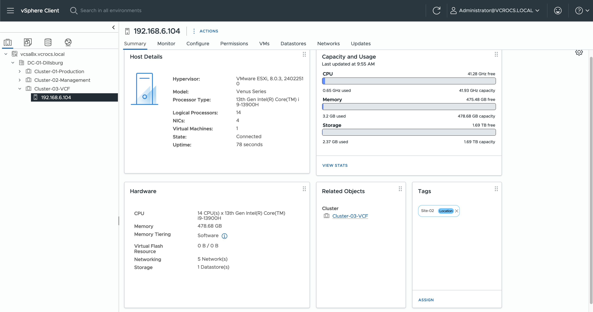
Screen Shot of the Nested ESXi install PowerShell Script output:
- Total Script Run Time is less than one minute
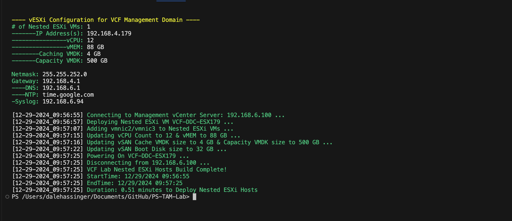
Screen Shot of the Physical Host (MS-01), Capacity and Usage, after the Nested ESXi install:
- Very little CPU/Memory Usage
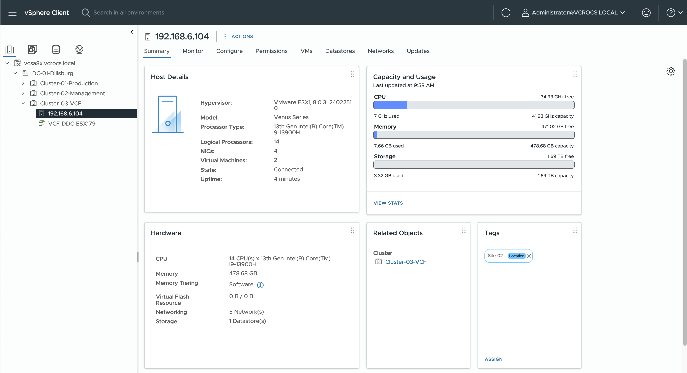
Screen Shot of the VCF Cloud Builder VM install PowerShell Script output:
- Total Script Run Time is ~6.5 minutes

Screen Shot of the Physical Host (MS-01), Capacity and Usage, after the Nested ESXi and VCF Cloud Builder install:
- Still very little CPU/Memory Usage
- Both VMs moved to a vAPP by the Script

Screen Shot of VCF Cloud Builder Deploy wizard, step 1:

Screen Shot of VCF Cloud Builder Deploy wizard, step 2:
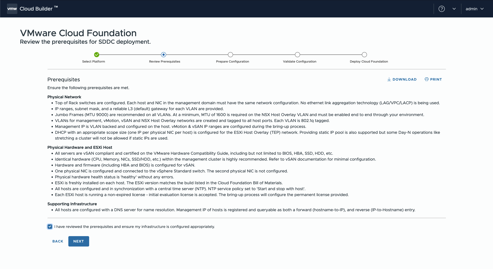
Screen Shot of VCF Cloud Builder Deploy wizard, step 3:

Screen Shot of VCF Cloud Builder Deploy wizard, step 4:
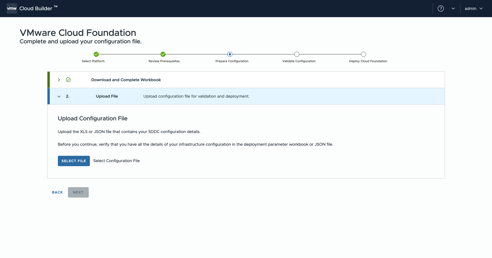
Screen Shot of VCF Cloud Builder Deploy wizard, step 5:

Screen Shot of the VCF Cloud Builder - All validation is successful:
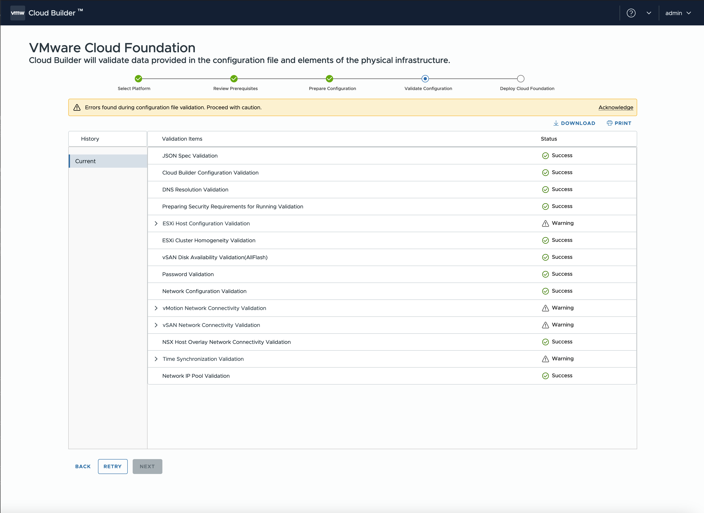
Screen Shot of VCF Cloud Builder Deploy wizard, step 6, start the VCF SDDC Deploy:
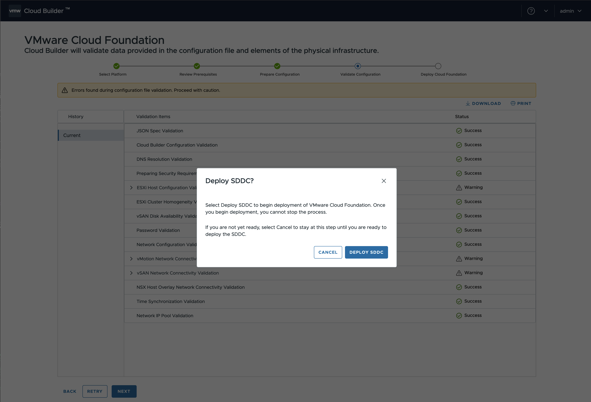
Screen Shot of the VCF Cloud Builder - A successful VCF deployment!
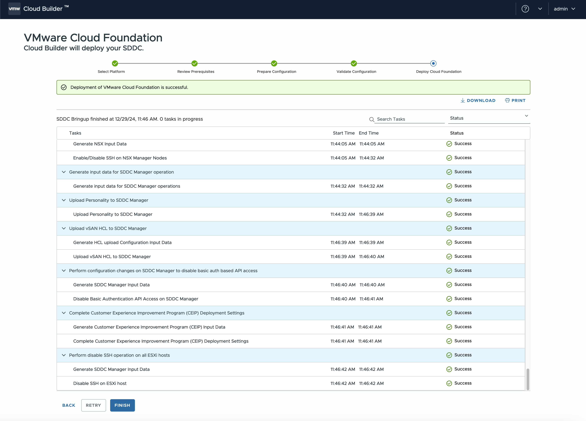
Screen Shot of the VCF Cloud Builder - Press button to launch SDDC Manager.
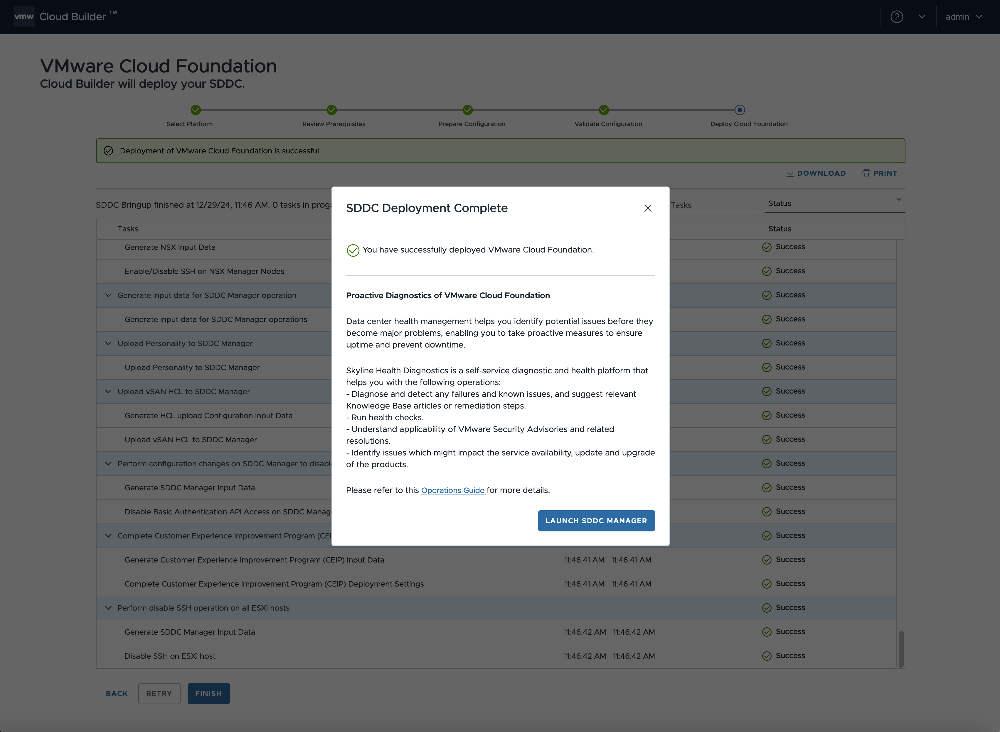
Screen Shot of the VCF SDDC Manager.

Screen Shot of the VCF SDDC Manager - By installing version 5.2.1, I also have the opportunity to upgrade to 5.2.1.1 and learn the upgrade process:

Screen Shot of the VCF SDDC Manager - You can see that the performance is good for a Home Lab environment:

Screen Shot of the Physical Host (MS-01), Capacity and Usage, after the installs are complete:
- CPU/Memory/Storage all look OK
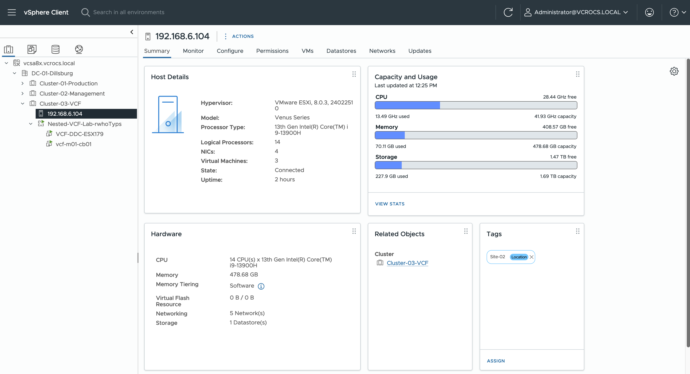
Screen Shot of the Physical ESXi Host vSwitch Security settings that is running the nested ESXi Host:
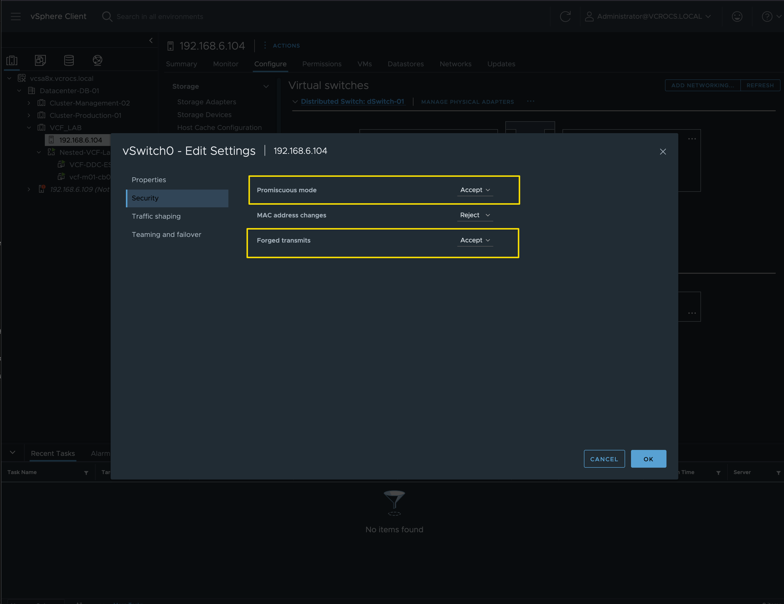
##### Lessons Learned:
- Update the security settings on the vSwitch of the physical ESXi hosts running the nested ESXi hosts to ensure proper configuration (Refer to the screenshot above.)
- MAKE SURE DNS IS SETUP WITH THE NAMES AND IPs YOU SPECIFY IN THE SCRIPT! If the install fails, it is probably a DNS issue!
- This script takes approximately 1.25 to 1.5 hours to run and create a VCF SDDC Manager environment.
- If monitoring the logs, expect periods with no new log entries. Be patient—the process will complete.
- Example commands to monitor the install logs of Cloud Builder:
tail -f -n 45 /var/log/vmware/vcf/bringup/vcf-bringup.logless /var/log/vmware/vcf/bringup/vcf-bringup.log- I have run these scripts multiple times, and they have completed successfully.
- Command to make sure the changes to allow a single ESXi can be used for VCF SDDC Manager on the Cloud Builder VM:
- The script will complete this step. This is the command to run if you want to verify.
cat /etc/vmware/vcf/bringup/application.properties- Command to restart the vcf-bringup.service on the Cloud Builder VM:
- The script will complete this step. This is the command to run if you want to run manually.
systemctl restart vcf-bringup.service- Check out Brock Peterson blogs for example VCF Operations Dashboards to monitor your VCF environments. Best VCF Operations Blog site available!
- I also have the example code saved in my GitHub Repository
- In this blog, I used a single Nested ESXi host to keep things simple, and the performance has been fine for a home lab setup.
- If you want to expand your environment, you can add additional Nested ESXi Hosts. You can either modify the deployment script or manually add more ESXi hosts to the SDDC Manager after the installation to better understand the process.
- After the VCF SDDC Manager is installed and running, you can safely delete the Cloud Builder from vCenter to free up space and resources.
Downloading the Nested ESXi Virtual Appliances from VMware Fling Site
For those looking to deploy a Nested ESXi Virtual Appliance, VMware provides pre-configured templates available on their Fling site.
➡️ Click here to access the downloads
##### Important Note for macOS Users
The Nested ESXi Virtual Appliance downloads are packaged as ZIP files. However, do not double-click to unpack them on macOS, as it may lead to issues with the extracted contents.
Instead, use the command line to properly extract the ZIP file:
unzip Nested_ESXi8_0u3c_Appliance_Template_v1_ova-dl.zipLinks to Help with Nested ESXi and VCF on NUC:
- Refresher on Nested ESXi Networking Requirements
- VMware Cloud Foundation 5.0 running on Intel NUC
- VMware Cloud Foundation on Intel NUC?
In my blogs, I often emphasize that there are multiple methods to achieve the same objective. This article presents just one of the many ways you can tackle this task. I've shared what I believe to be an effective approach for this particular use case, but keep in mind that every organization and environment varies. There's no definitive right or wrong way to accomplish the tasks discussed in this article.
Always test new setups and processes, like those discussed in this blog, in a lab environment before implementing them in a production environment.
If you found this blog article helpful and it assisted you, consider buying me a coffee to kickstart my day.